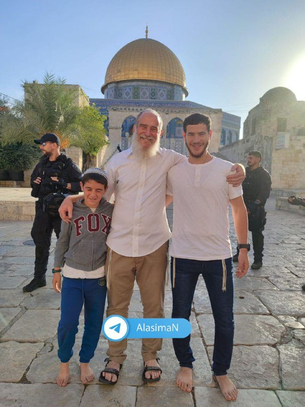

خيام «العرش» بين بيوت المقدسيين: المستوطنون ينصبونها في محيط البلدة القديمة وفي الشيخ جراح
خيمة «عاريشة» بين منازل الأهالي في الشيخ جراح منذ الصباح، وخيام أخرى في ساحات القدس القديمة بمناسبة العيد.
البلدة القديمةصورفريق العاصمة

1765 مستوطنااقتحموا الأقصى في ثالث أيام العرش، و316 آخرون تحت مسمى السياحة
حاخامات شاركوا في الاقتحام، ومستوطن أدخل قربانا نباتيا وأدى سجودا علنيا قرب باب الرحمة، ليصل عدد المقتحمين في ثلاثة أيام إلى 4060.
المسجد الأقصىمراسلو العاصمة في الباحات5 دقائق قراءة
خيمة «عاريشة» بين منازل الأهالي في الشيخ جراح منذ الصباح، وخيام أخرى في ساحات القدس القديمة بمناسبة العيد.
البلدة القديمةصورفريق العاصمة
المدينة مرسومة كما هي، وفي مركزها قبة الصخرة. كل دائرة مسافة حقيقية من الأقصى، وكل خبر مثبت في مكانه. اقترب حتى أبواب المسجد لترى حالتها الآن.
4,702 مستوطنااقتحموا الأقصى وأدوا طقوسا وصلوات تلمودية خلال الشهر
المصدر: قناة العاصمة، 4 أكتوبر 2025
64 قرار إبعادقرار إبعاد عن المسجد الأقصى أصدرها الاحتلال بحق مقدسيين
المصدر: قناة العاصمة، 3 أكتوبر 2025
شهيدانفي القدس المحتلة خلال الشهر، مع عمليات هدم وتجريف
المصدر: مجلة العاصمة الشهرية
تتبعنا الاقتحامات بالصور والتوقيت منذ 2022. المسار الذي كان يمر في دقائق صار وقوفا طويلا وطقوسا علنية، ثم قرابين وسجودا ملحميا.
تحقيقرنا س. وفريق البيانات14 دقيقة قراءة


ما رأته كاميراتنا اليوم، بالترتيب الذي حدث فيه
التقسيم الزماني لم يعد مشروعا. صار جدولا يعلق على أبواب المسجد.